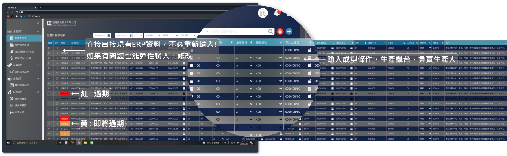

Keep track of the production line and manage machine allocation.
Design a system to optimize traditional dual-shot injection factories and solve five key issues !!
Unknown machine status
1.Unable to track defect rates 2.Unclear machine utilization 3.Expired work orders 4.Unclear and messy scheduling
LineTrack helps you with order creation, machine allocation, production document integration, defect calculation, and analysis—giving you full control over every step !!
Our partners
We have an excellent product manager, a imaginative UI/UX designer, a creative front-end engineer, and a logical and meticulous back-end engineer.
As a UI/UX designer, I am responsible for conducting user interviews, designing user flows, creating interfaces, conducting usability testing, and gathering feedback.

Common production issues in Taiwan's SMEs:
Work Order Tracking
01.Reminder for Expiring Work Orders.
02.Work orders assigned to machines.
03.Flexible line allocation.
Machine utilization stats.
01.Real-time machine status tracking.
02.Real-time machine status feedback.
03.Real-time downtime feedback.
Instant defect tracking
01.Real-time QC feedback on defects.
02.Managers can quickly prevent losses.
03.Enhance production line transparency.
Based on user behavior, we have identified the following colors!

LineTrack Project Schedule

Color presentation
01.Light blue: Molding conditions.
02.Red: Expired work orders.
03.Yellow: Work orders expiring soon.
04.Black text: Production paused
Integrate existing ERP data
01.Fetch data from created work orders.
02.Add missing data from the top-right.
03.Enter line, machine, setup time, etc.
Flexible line management.
01.Input, update, delete like Excel.
02.Adjust lines flexibly.
03.Flexibly insert orders and switch lines/machines.
LineTrack QC Inspection vs. Machine Status Switch (Tablet)
Strict quality control ensures zero production waste!
QC staff regularly inspect the line, verifying defect counts based on dispatch data and defect types, ensuring timely production adjustments to reduce losses!
They also check the machine's production status, record downtime reasons, and report to the dashboard, allowing managers to track machine conditions across all plants!

Master every aspect of the production line, starting with the details
LineTrack simplifies complex operations, optimizing every aspect of the production line for greater efficiency.
For small and medium businesses, large ERPs are costly and complex. LikeTrack is lightweight and flexible, helping managers track and adjust in real time. Your best partner!